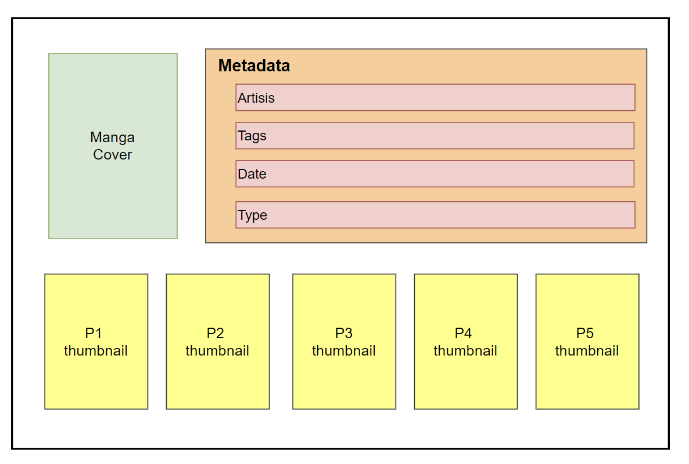

Basic Usage of Python AIOHTTP
Preface
Recently, I’ve been using Python to write web crawlers for downloading manga (see previous posts on LANraragi). A typical page of a manga like this:
All the data on this webpage can be retrieved using BeautifulSoup, and only one communication is needed per page. However, downloading images is different: each image requires a separate communication, and the response body is often quite large. Obviously, images don’t need to be downloaded sequentially, otherwise, it would waste a lot of time.
AIOHTTP is an asynchronous HTTP client/server module, which is very suitable for this scenario. Through asynchronous programming, it can maximize the performance of the network (and the server). This article focuses on introducing the basic usage of AIOHTTP, without going into details about how it works.
Principles
AIOHTTP is an HTTP library based on Python’s coroutine mechanism. HTTP needs no introduction, and Python coroutines are based on the asyncio module, using async and await as keywords, aiming to improve the efficiency of IO-bound tasks.
Using coroutines involves concurrency — synchronizing tasks and mutex of data — which needs to be taken into account when programming.
Example 1: hello world
copied from the official doc:
1 | import aiohttp |
aiohttp.ClientSessionobject is responsible for sending all requests;- If the function body contains
asyncorawaitkeywords, the function must be asynchronous, i.e. defined withasync def; - For an async function:
- If called in a sync context,
asyncio.run(async_function(arguments))should be used; - If called in an async context,
await async_function(arguments)should be used, as inhtml = await response.text()above.
- If called in a sync context,
Example 2: ClientSession
aiohttp.ClientSession has its own connection pool. Therefore we usually create only one instance during the lifecycle of the program to reuse connections.
1 | import aiohttp |
Example 3: Downloading Files
If we want to download large files like photos or videos, we should use the following way:
1 | async def download_image(session: aiohttp.ClientSession, uri: str, file_path: str): |
Example 4: Concurrent Execution
This is a feature of asyncio, not AIOHTTP
Suppose we want to download multiple images, we can do it like this:
1 | async def main(): |
However, the downloads are still sequential, not concurrent.
The correct way is to use asyncio.gather, which can execute a series of tasks concurrently.
1 | async def main(): |
The parameter of gather() is a call to async functions, that is gather(f1(), f2()). Here gather(*[f1(), f2()]) is equivalent to gather(f1(), f2())
await ensures that all download tasks are completed before the the next statement is executed.
Summary
In my web crawler project, the use of AIOHTTP is relatively simple. I only implemented concurrent image downloading. The main work focuses on parsing HTML.
In the project, I used the template method design pattern: in the parent class, I implemented concurrent downloads using AIOHTTP, while the subclass only needs to implement the parse_html() abstract function. AIOHTTP is only used when setting up the framework, and will not be involved later. Considering the possibility of future use, I wrote this post to document the basic usage of AIOHTTP and asyncio.
References
- ChatGPT
- Python doc: asyncio
- AIOHTTP